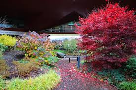
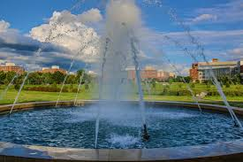
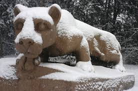

About
The goal of the Penn State Exploration Guide is to help anyone visiting or living in the State College area to find things they like to do in the area. We know that their are a large variety of tastes and preferences, so we have broken our ideas into different groups. This way no matter who you are or what you are interested in, our site should be able to find something you like in the State College are. Our categories are Adventure, Elderly, Adult, Family, Student, and Seasonal but feel free to look through any category as many activities are enjoyable for people of all kinds!
Spring

Arboretum
THON
Farmers Market
Fall
Football games
Summer
Arts Fest
Nature Inn
Hike Mount Nittany
Winter
Basketball games
Hockey games